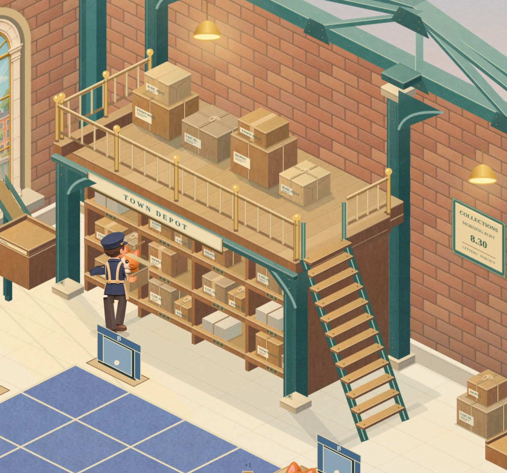
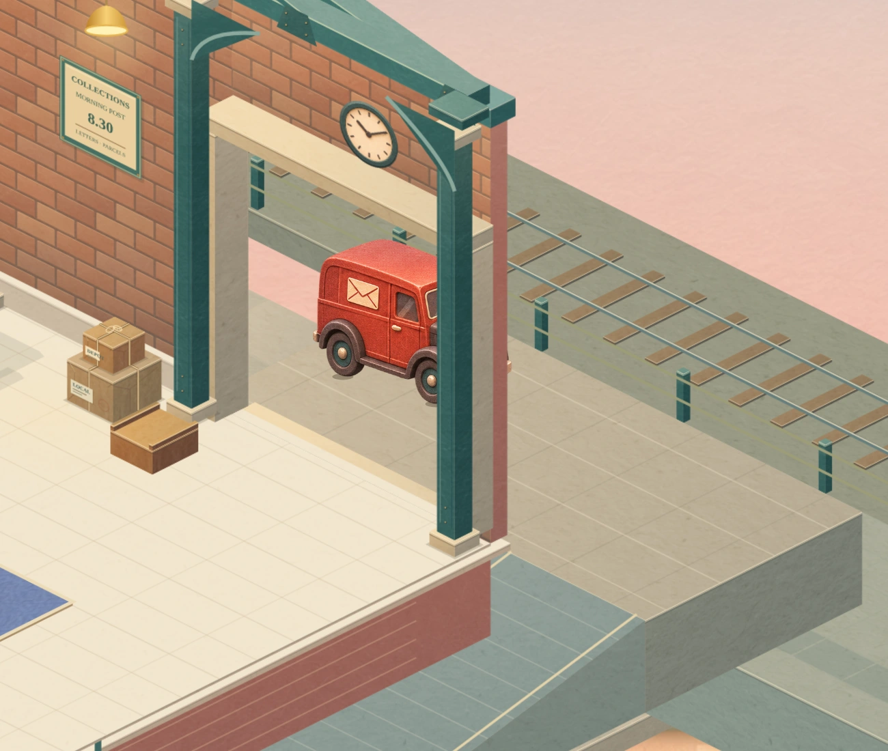
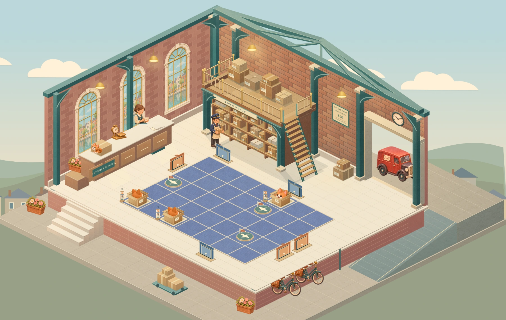
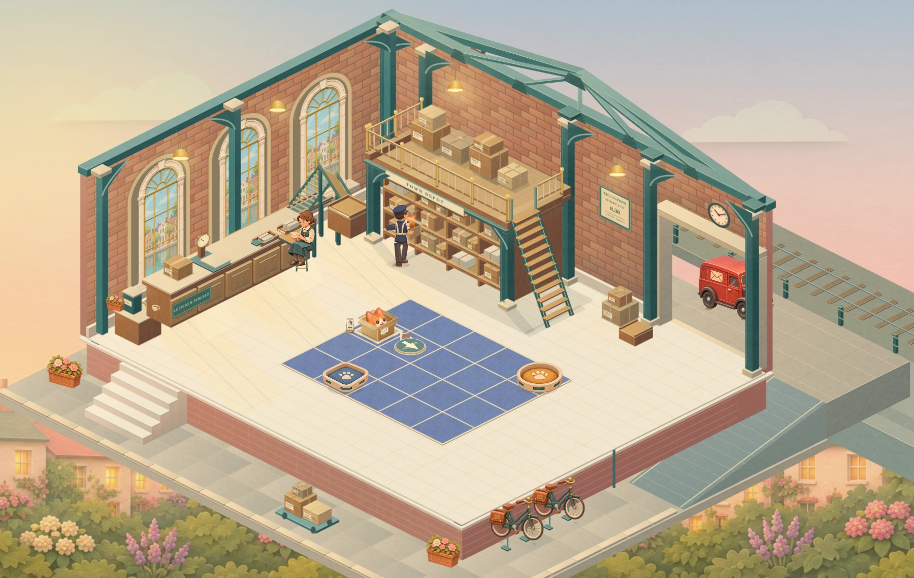
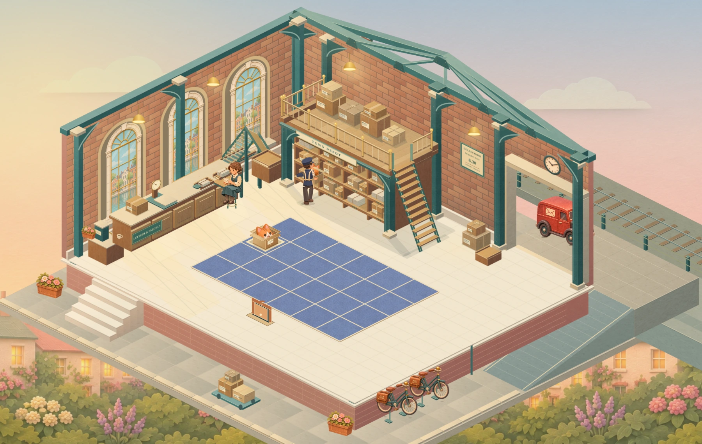
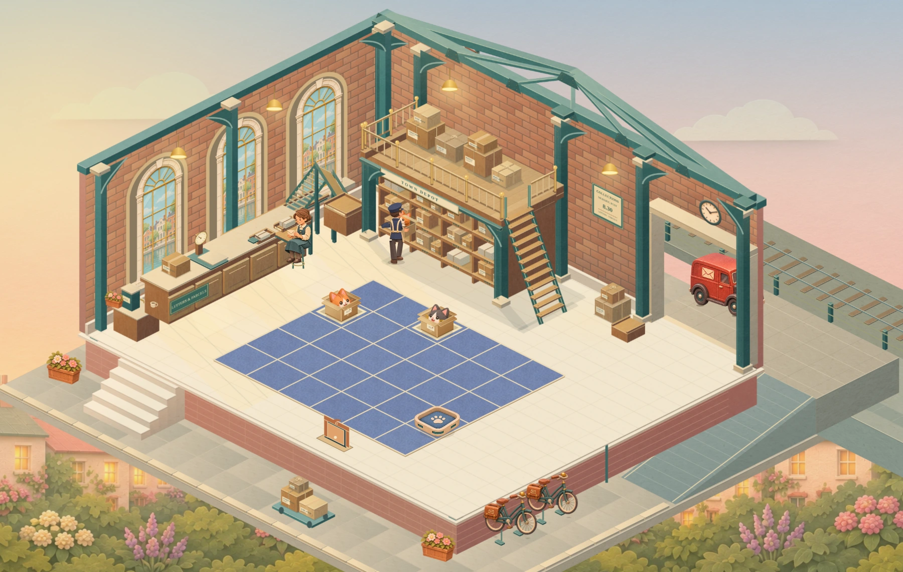
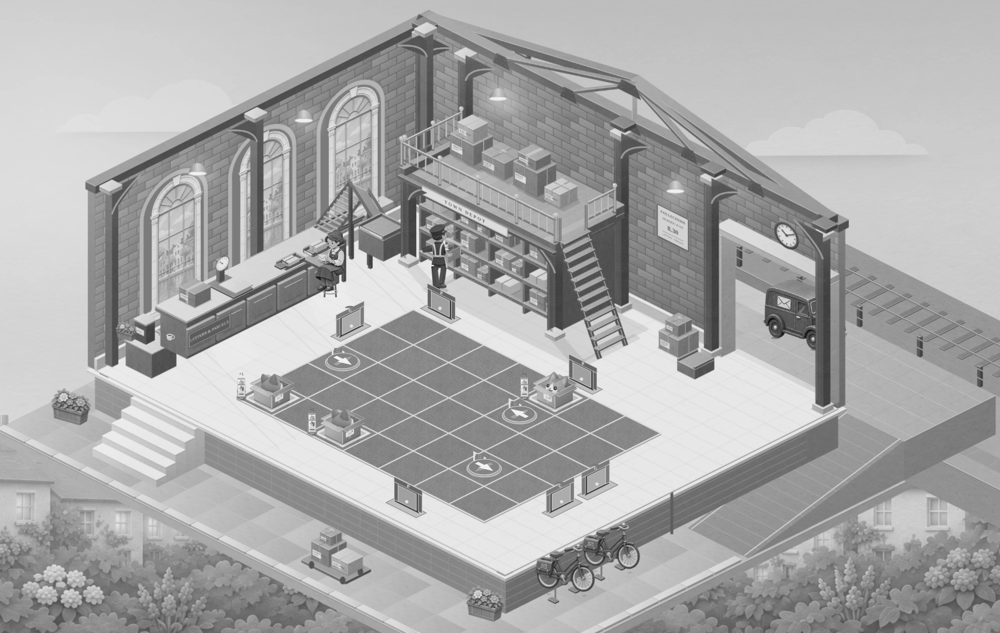
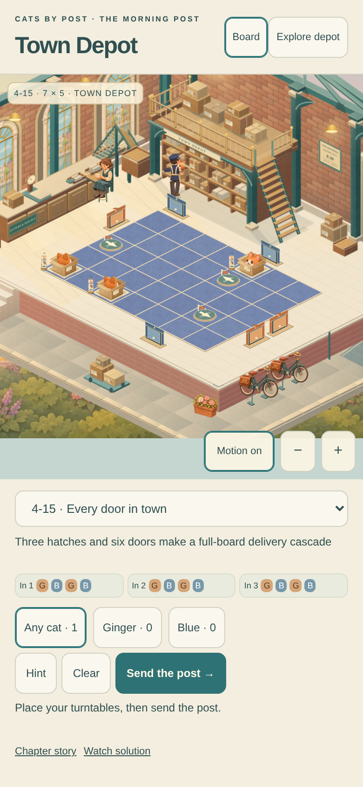

Cats by Post · Town Depot
The whole room, at work
The accepted corner’s paper construction now extends through the hall and goods yard, with a warmer dawn and a complete postal round. This is the next playable review.
 Actual playable renderer · delivery 4-15 · seven columns, five rows.
Actual playable renderer · delivery 4-15 · seven columns, five rows.
A complete round of post
Collect the cat, prepare and weigh the parcel, send it through dispatch, exchange the mailbags at the van, then take a tea break. The original 48-second schedule still drives the routine.
The full 48-second loop, captured from the playable renderer at 24 fps. No interpolated or generated video frames.
Collection and the parcel taking shape.
The supported scale, weighing and retrieval.
The roller, lift and connected dispatch chute.
The mailbag exchange through the loading doorway.
Tea, chapters and the growing sorting floor
The same cup travels from its shelf to the urn and the worker’s hand.
The existing chapter teaching demonstration.
First growth scene: the cart and worker stay in front of the board.
Second growth scene: the handle remains attached to the worker’s hands.
The satchel exit retains the completed finale board.
Open the chapter · First growth scene · Second growth sceneThe room around the board

The accepted loft, with the finish carried across the hall.
The loading doorway, road and connected pavement ramp.Compare with the accepted corner checkpoint

Before · accepted corner, same camera and delivery.Now · whole-room finish and activity.All four board sizes, grayscale and phone layout

5×4 · delivery 3-1.
6×4 · delivery 4-1.
6×5 · delivery 4-7.7×5 · delivery 4-15.
Grayscale: the board and doors remain distinct.
390×844 Chromium phone emulation; physical Safari is not qualified by this capture.The study keeps all 25 existing deliveries and uses separate review storage. This is a visual review, with silent study controls. Shared integration and final visual acceptance remain separate.